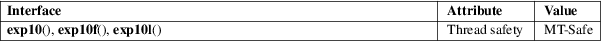

exp10, exp10f, exp10l − base-10 exponential function
Math library (libm, −lm)
#define
_GNU_SOURCE /* See feature_test_macros(7) */
#include <math.h>
double
exp10(double x);
float exp10f(float x);
long double exp10l(long double x);
These functions return the value of 10 raised to the power of x.
On success, these functions return the base-10 exponential value of x.
For various special cases, including the handling of infinity and NaN, as well as overflows and underflows, see exp(3).
See math_error(7) for information on how to determine whether an error has occurred when calling these functions.
For a discussion of the errors that can occur for these functions, see exp(3).
For an explanation of the terms used in this section, see attributes(7).

GNU.
glibc 2.1.
Before glibc 2.19, the glibc implementation of these functions did not set errno to ERANGE when an underflow error occurred.
cbrt(3), exp(3), exp2(3), log10(3), sqrt(3)